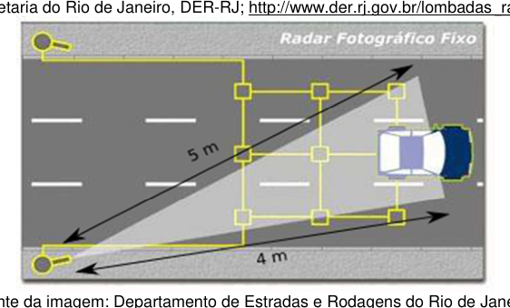
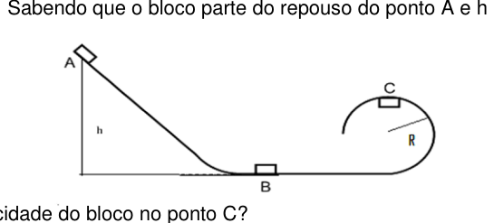
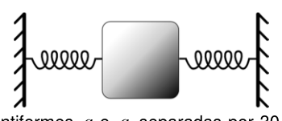
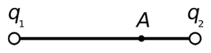

Fonte: gare di altri paesi/Brasile/OBF215_Provas_1a_Fase/Prova_OBF2015_F1_Nivel_IIIa.pdf · Apri PDF · apri PDF p.1
Cluster: Meccanica
Problema 1
A luz viaja a uma velocidade de aproximadamente km/s. Sendo as distâncias astronômicas muito grandes, muitas vezes é conveniente expressá-las em ano-luz (espaço percorrido pela luz em um ano corresponde aproximadamente a km). Imagine que uma informação fosse enviada por laser ao sistema Alfa Centauri e percorresse uma distância de m.
Baseado nas informações contidas no texto, que informação seria dada a respeito do tempo gasto para a luz percorrer tal distância em dias, aproximadamente?
(A) dias (B) dias (C) dias (D) dias (E) dias
Topic: Newtonian Mechanics, Order-of-Magnitude Estimation Metodi: Kinematic Equations, Order-of-Magnitude Estimation Competenze: Estimation & Approximation, Unit Conversion Fonte: Testo (PDF) — p.2
Problema 2
O Radar Fixo é um equipamento eletrônico, computadorizado, que visa monitorar um determinado ponto da rodovia ou toda ela. Na figura acima, considere que o radar detecta veículos dentro do triângulo retângulo em destaque. Qual a área da estrada, em m², coberta pelo feixe?
(A) 6 (B) 9 (C) 10 (D) 12 (E) 20

Radar beam forming right-triangle detection zoneTopic: Newtonian Mechanics, Order-of-Magnitude Estimation Metodi: Physical Modeling, Dimensional Analysis Competenze: Physical Reasoning, Mathematical Modeling Fonte: Testo (PDF) — p.3
Problema 3
Considere uma situação análoga a uma montanha russa na qual um bloco desliza sem atrito sobre uma calha que tem o perfil representado na figura abaixo, onde , sendo o raio do trecho circular. Sabendo que o bloco parte do repouso do ponto A e m.
Qual a velocidade do bloco no ponto C?
(A) m/s (B) m/s (C) m/s (D) m/s (E) m/s

Frictionless track with loop of radius RTopic: Newtonian Mechanics, Conservation of Energy Metodi: Energy Conservation Method, Conservation of Energy Competenze: Physical Reasoning, Mathematical Modeling Fonte: Testo (PDF) — p.3
Problema 4
Considere uma situação análoga a uma montanha russa na qual um bloco desliza sem atrito sobre uma calha que tem o perfil representado na figura abaixo, onde , sendo o raio do trecho circular. Sabendo que o bloco parte do repouso do ponto A e m.
Qual o valor da Normal no ponto C, considerando que a massa do bloco é kg?
(A) N (B) N (C) N (D) N (E) N
 Frictionless track with loop of radius R
Frictionless track with loop of radius R
Topic: Newtonian Mechanics, Conservation of Energy Metodi: Free-Body Diagram, Energy Conservation Method, Kinematic Equations Competenze: Physical Reasoning, Mathematical Modeling Fonte: Testo (PDF) — p.3
Problema 5
O Pêndulo balístico: A velocidade de um projétil pode ser determinada através de um pêndulo balístico, que consiste em um dispositivo de massa kg, pendurado por dois fios de massa desprezível. Considere um projétil de massa g com velocidade m/s.
Qual a perda de energia cinética após a colisão?
(A) J (B) J (C) J (D) J (E) J
Topic: Conservation of Momentum, Conservation of Energy Metodi: Conservation of Momentum, Conservation of Energy, Impulse-Momentum Theorem Competenze: Physical Reasoning, Mathematical Modeling Fonte: Testo (PDF) — p.4
Problema 6
O Pêndulo balístico: A velocidade de um projétil pode ser determinada através de um pêndulo balístico, que consiste em um dispositivo de massa kg, pendurado por dois fios de massa desprezível. Considere um projétil de massa g com velocidade m/s.
Qual a altura máxima que o conjunto (projétil + Bloco) atinge?
(A) cm (B) cm (C) cm (D) cm (E) cm
Topic: Conservation of Momentum, Conservation of Energy Metodi: Conservation of Momentum, Energy Conservation Method Competenze: Physical Reasoning, Mathematical Modeling Fonte: Testo (PDF) — p.4
Problema 7
Uma máquina térmica que opera conforme o ciclo de Carnot entre um reservatório de baixa temperatura de C e um reservatório de alta temperatura. Sabendo que esta máquina possui eficiência de . Qual deve ser o aumento de temperatura do reservatório quente para que a eficiência seja de ?
(A) C (B) C (C) C (D) C (E) C
Topic: Thermodynamics Metodi: Thermodynamic Cycle Analysis, First Law of Thermodynamics Competenze: Physical Reasoning, Mathematical Modeling Fonte: Testo (PDF) — p.4
Problema 8
Um trabalho recente publicado na Revista Brasileira de Ensino da Física destaca um “Refrigerador termoelétrico de Peltier usado para estabilizar um feixe laser em experimentos didáticos”. O trabalho destaca que o experimento registrou uma variação de temperatura de F. Se você tivesse que obter esta informação na escala Celsius, qual alternativa fornece essa temperatura?
(A) C (B) C (C) C (D) C (E) C
Topic: Thermodynamics Metodi: Dimensional Analysis, Physical Modeling Competenze: Unit Conversion, Physical Reasoning Fonte: Testo (PDF) — p.4
Problema 9
Uma barra metálica com comprimento de cm é aquecida e observa-se que durante o aquecimento ocorreu um aumento de em seu comprimento. A variação de temperatura registrada foi de C. Qual das alternativas representa o valor do coeficiente de dilatação do material que constitui a barra, em C?
(A) (B) (C) (D) (E)
Topic: Thermodynamics, Elasticity & Materials Metodi: Physical Modeling, Dimensional Analysis Competenze: Physical Reasoning, Mathematical Modeling Fonte: Testo (PDF) — p.4
Problema 10
Em um laboratório didático, há um corpo de kg que está preso entre duas molas de constantes elásticas iguais, conforme a figura abaixo. Após uma pequena perturbação esse corpo oscila com uma frequência de Hz. Qual o valor da constante elástica da mola?
(A) N/m (B) N/m (C) N/m (D) N/m (E) N/m

Mass between two equal springsTopic: Oscillations & Waves Metodi: Simple Harmonic Motion Analysis, Hooke’s Law Competenze: Physical Reasoning, Mathematical Modeling Fonte: Testo (PDF) — p.4
Problema 11
Considere duas cargas puntiformes e separadas por cm. Qual o módulo do campo elétrico resultante que essas cargas produzem no ponto A? Considere que a carga encontra-se a cm do ponto A e que os valores de e sejam respectivamente nC e nC, e a constante eletrostática no vácuo N·m²/C².
(A) N/C (B) N/C (C) N/C (D) N/C (E) N/C

Collinear charges q1, q2 and point ATopic: Electrostatics Metodi: Coulomb’s Law, Superposition Principle Competenze: Physical Reasoning, Mathematical Modeling Fonte: Testo (PDF) — p.4
Problema 12
Considere que cada uma das placas paralelas de um capacitor possua uma área de cm² e que a distância entre as placas seja de cm. Com o capacitor conectado a uma fonte de alimentação o mesmo é carregado até atingir uma diferença de potencial de V. Depois de desconectado da fonte de alimentação, é inserida uma camada de material isolante entre as placas. Verificou-se que a diferença de potencial diminuiu para V. Qual a capacitância depois de inserido o material dielétrico? Considere a permissividade elétrica no vácuo: F/m.
(A) pF (B) pF (C) pF (D) pF (E) pF
Topic: Electrostatics Metodi: Electric Potential Method, Gauss’s Law Competenze: Physical Reasoning, Mathematical Modeling Fonte: Testo (PDF) — p.5
Problema 13
Um próton com carga e massa , movimentando-se com certa velocidade entra em uma região onde temos a presença de um campo magnético constante. Qual a expressão para o raio da trajetória da partícula, dentro da região que contém o campo magnético , em função de , , e ?
(A) (B) (C) (D) (E)
Topic: Magnetism, Electromagnetism Metodi: Lorentz Force Analysis, Physical Modeling Competenze: Physical Reasoning, Mathematical Modeling Fonte: Testo (PDF) — p.5
Problema 14
Foram feitas algumas medidas experimentais no laboratório de Física, observando como a corrente elétrica e a diferença de potencial se comportava nos terminais de um resistor fabricado com um fio de níquel-cromo. A tabela abaixo mostra o registro destas medidas.
| (A) | 0,50 | 1,00 | 2,00 | 4,00 |
|---|---|---|---|---|
| (V) | 1,94 | 3,88 | 7,76 | 15,52 |
De acordo com os resultados experimentais, qual a resistência do resistor em ohms?
(A) (B) (C) (D) (E)
Topic: Circuits Metodi: Experimental Data Analysis, Graph Linearization Competenze: Experimental Data Analysis, Graph Linearization Fonte: Testo (PDF) — p.5
Problema 15
Uma bobina foi construída no laboratório de Física com voltas de fio com uma resistência total de . Cada volta da bobina representa um quadrado de cm de lado. Um campo magnético uniforme é dirigido perpendicularmente ao plano da bobina, e o campo muda linearmente de a T em s. Qual a fem induzida enquanto o campo está mudando?
(A) V (B) V (C) V (D) V (E) V
Topic: Electromagnetic Induction Metodi: Faraday’s Law of Induction, Physical Modeling Competenze: Physical Reasoning, Mathematical Modeling Fonte: Testo (PDF) — p.5
Problema 16
Um avião Airbus 320 voa a uma velocidade de km/h em relação ao solo. Considere uma onda sonora 1 se aproximando pela frente do avião e outra onda sonora 2, pela traseira, ambas propagando-se a m/s em relação ao solo. Qual a velocidade de cada onda em relação ao avião?
(A) m/s e m/s (B) m/s e m/s (C) m/s e m/s (D) m/s e m/s (E) m/s e m/s
Topic: Oscillations & Waves, Special Relativity Metodi: Kinematic Equations, Physical Modeling Competenze: Physical Reasoning, Unit Conversion Fonte: Testo (PDF) — p.5
Problema 17
Uma partícula alfa () é lançada com uma velocidade em direção ao centro do núcleo de um átomo de ouro (), que se encontra parado. Entre as alternativas abaixo, que expressão representa a menor distância a que a partícula pode se aproximar do núcleo?
(A) (B) (C) (D) (E)
Topic: Nuclear & Particle Physics, Electrostatics Metodi: Energy Conservation Method, Coulomb’s Law Competenze: Physical Reasoning, Mathematical Modeling Fonte: Testo (PDF) — p.6
Problema 18
Considere o modelo de Bohr para o átomo de hidrogênio, onde o elétron orbita em torno do núcleo sem perda de energia em uma trajetória circular de m de raio, com uma frequência de Hz. Qual o valor aproximado do campo magnético produzido no centro da órbita? (Considere T·m/A e C)
(A) T (B) T (C) T (D) T (E) T
Topic: Modern-Quantum Physics, Magnetism Metodi: Bohr Model & Quantization, Biot-Savart Law Competenze: Physical Reasoning, Mathematical Modeling Fonte: Testo (PDF) — p.6
Problema 19
Qual é a energia de um quantum de luz com comprimento de onda de nm, aproximadamente? (Dados: J·s, m/s, eV J)
(A) eV (B) eV (C) eV (D) eV (E) eV
Topic: Modern-Quantum Physics Metodi: Photon Energy Relation, Physical Modeling Competenze: Physical Reasoning, Unit Conversion Fonte: Testo (PDF) — p.6
Problema 20
Um experimento do efeito fotoelétrico com um cátodo de alumínio cuja função trabalho é eV é realizado em um laboratório de Física. Um determinado elétron dentro do cátodo possui uma velocidade de m/s. Se a diferença de potencial entre o ânodo e o cátodo for de V, qual a energia cinética final do elétron no ânodo?
(A) eV (B) eV (C) eV (D) eV (E) eV
Topic: Modern-Quantum Physics Metodi: Photon Energy Relation, Energy Conservation Method Competenze: Physical Reasoning, Mathematical Modeling Fonte: Testo (PDF) — p.6